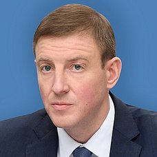

Person profile · РОЙ.МАРКЕТ investigation
At a glance
Roles & corporate affiliations
| Entity | Role | Since | Source |
|---|---|---|---|
| None | role Then Secretary of United Russia’s General Council; later Head of the Altai Republic | — |
Sanctions & screening
Sanctioned — OpenSanctions topics: role.pol; sanction; debarment; poi. PLAUSIBLE match via OpenSanctions screening (2026-08-24) — NOT personal-ИНН-confirmed (no idNumber on file to cross-check), but corroborated by independent role/context detail: exact role match: Secretary of United Russia's General Council, later Head of the Altai Republic — matches this registry's existing two-stage role description precisely. Treat as a strong lead, not yet at the same confidence tier as an ИНН-confirmed match — a full primary designation document read would close the gap.
Generated from this investigation's registry (data/registry/) by scripts/build_person_profile.py. Not a substitute for reading the underlying primary sources listed above.